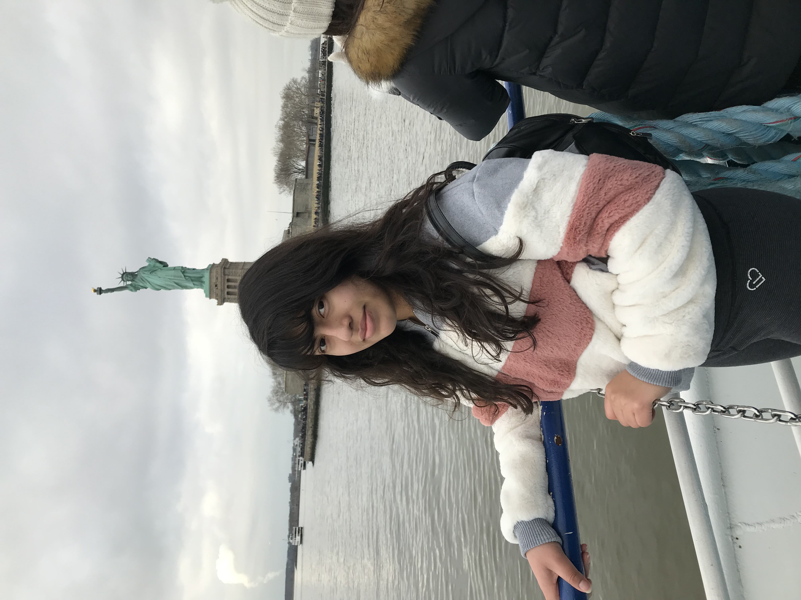

Hello, my name is Lucy Martinez. I am pursuing a Ph.D. in mathematics at Rutgers University and I am a NSF Graduate Research Fellow. My research
interests include combinatorics, and graph theory.
I participated in the MSRI-UP program at Berkeley, California during the summer of 2019. Under
the supervision of Dr. Pamela Harris, I worked on combinatorial representation theory of Lie algebras.
In the summer of 2020, I participated in the Research Experience
for Undergraduates (REU) with East Tennessee State University.
My goals include influencing other Hispanic students to pursue their dreams
and supporting the Hispanic/Latinx math community. One of my main experiences focused on Latinas in STEM
LaSTEM program at Stockton University. This program.
 https://sites.google.com/stockton.edu/lastem/home